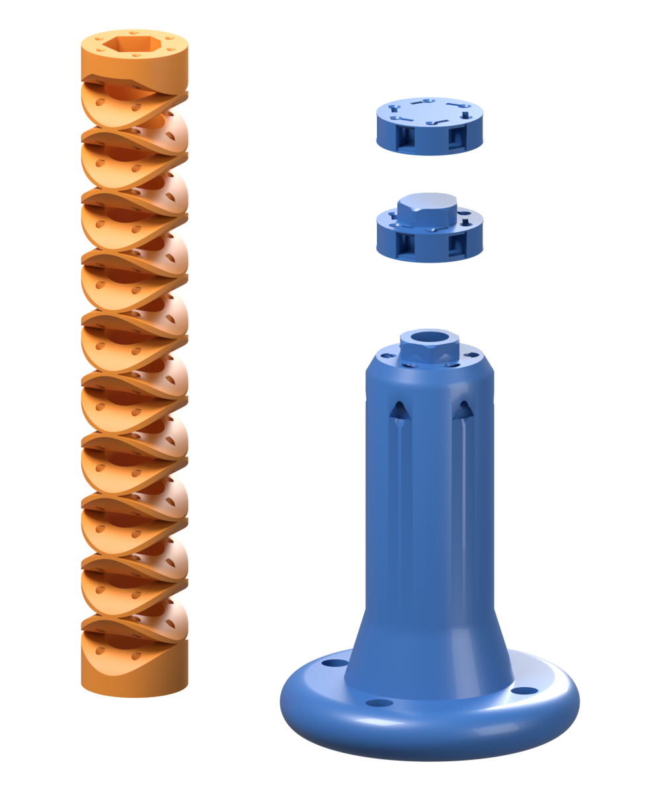
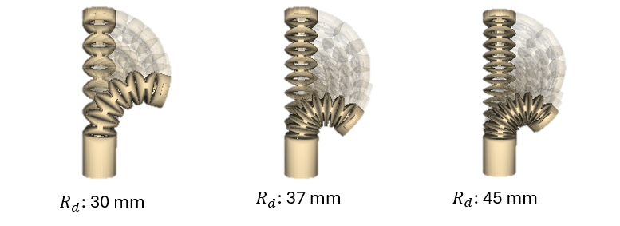
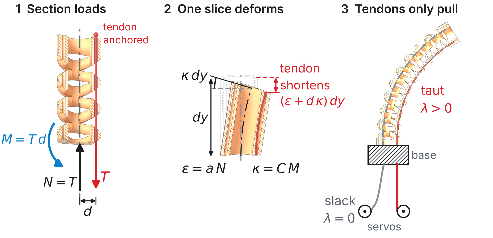
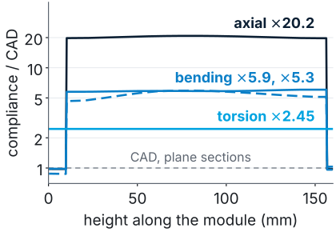
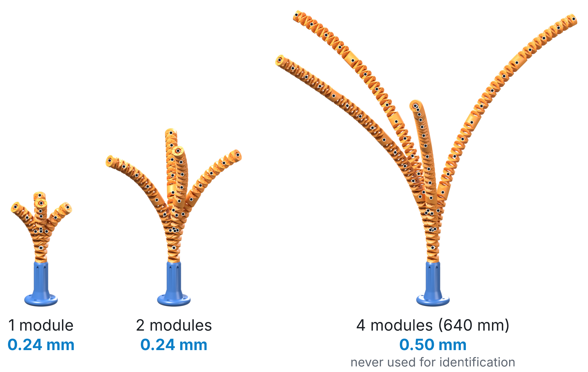
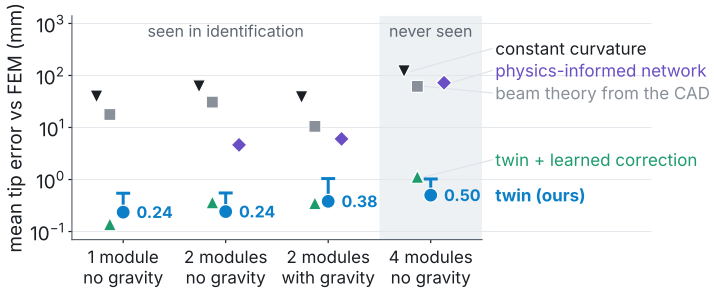

From geometry to a real-time digital twin of rolling-disc notched tendon-driven continuum robots
A printed robot that bends along its whole length when a tendon in its wall is pulled. This ME 299
project asks how the shape of its notches sets the bend, and whether its full shape can be predicted from the servo
commands alone, for any number of modules, with no sensor on the robot.
Om Mohan Pawar, 25110218Supervised by Prof. Madhu VadaliIITGN Robotics Laboratory, Mechanical Engineering
Modules
A constant-curvature sketch; the twin itself also accounts
for compression, slack tendons and gravity.
Abstract
Tendon-driven continuum robots bend along their whole length, which suits confined spaces but makes them hard to
design and to model. The first part of this project, submitted to ICRA 2027 with me as second author, studies how
the notch geometry sets the bend: an automated pipeline from CAD to finite-element simulation ran 616 simulations,
and three printed prototypes were tested. The disc diameter controls curvature, the length controls reach, and close
to half of the tendon stroke is lost to axial compression.
The second part, which I lead and which is being prepared for IEEE RA-L, is a digital twin that predicts the full
shape of a modular robot from the servo commands alone. A beam model built from the CAD, with tendons that can only
pull, is identified once on one and two modules. Without refitting, it predicts four-module stacks (640 mm) to
0.50 mm of FEM, 0.08 % of length, in 1 to 4 ms per pose.


The backbone and its design parameters; the parts designed for the four-module build (TPU module,
PLA couplers and base); and the same load simulated on three disc sizes.
How geometry governs compliance
Under review at ICRA 2027, with Divij Yadav (first author), Krishnapriya R, Shaili Gandhi and Madhu Vadali
The SWEEP pipeline builds each design in CadQuery with one Boolean cut, meshes it with CGAL and pulls one tendon
at a time in SOFA. Across 14 designs, the disc diameter sets how many notches fit and therefore the curvature,
raising the bend at 0.9 N from 54° to 143°; the length mainly sets reach. Four tendons suit the two notch
planes better than three. My part was the move to SOFA 25.06, the parallel sweeps, and the checks for mesh volume,
settling and self-contact.
Mean curvature and constant-curvature error against tension: disc diameter on the left pair, length on
the right pair.
Where the tendon stroke goes, the tension needed for a 110° bend, and how evenly the robot bends in
each direction with three and four tendons.
A sensor-free twin of one SWEEP design
In preparation for IEEE Robotics and Automation Letters, lead author
The module is the SWEEP design with a 30 mm disc. Its backbone is a beam whose cross-section follows the
CAD: each tendon loads every slice it passes, the tendon map is exactly linear, and tendons that would have to push
go slack, which makes the tensions the solution of a convex problem. Instead of training a network to output
shapes, the twin learns the law of one module, four compliance scales and a smooth correction fitted through the
exact solver on one and two modules, and reuses it unchanged for any number of modules.

The physics, drawn on half sections of the CAD: a tendon at offset d puts a compression
N = T and a moment M = Td on every section it passes; each slice
shortens and bends; a paid-out tendon goes slack.

The identified law: each compliance of one module divided by its plane-section value.


Left: the twin rendered on the CAD for 1, 2 and 4 modules at one scale; dots are the FEM centreline.
Right: mean tip error on held-out poses. The identified law stays at 0.24 to 0.50 mm; constant curvature errs
by 38 to 121 mm and a physics-informed network must be retrained for four modules.
How the approach changed
The first version was a virtual sensor: a constant-curvature estimate of the tip, corrected by a Gaussian process
trained on FEM. Two findings changed the direction. The simulated cables could push as well as pull, and the
pull-only model with coupling between sections turned out to be published already. The work moved to identifying
the law of one module from data and testing whether it transfers to longer stacks.
Two early results on the first three-tendon robot: what changed once cables could only pull, and how
much data each model needed.
What comes next: towards sensor-free cavity insertion
Part A is complete. The work continues on the twin.
Hardware validation (now)
Five numbers are calibrated on about fifteen motion-capture poses of two
modules and the twin is tested on four. It passes if the mean tip error is at most 2 % of length, a bar set
before any data.
Contact in the twin
A wall pushes one way only, like a tendon pulls one way only, so contact adds a
second complementarity problem of the same kind to the solver. It passes if the shape against a wall matches FEM
and motion capture.
Cavity insertion
The stack is fed through an opening while the twin chooses the servo commands. It
passes if the robot reaches a target inside a printed cavity, with no sensor on the robot.